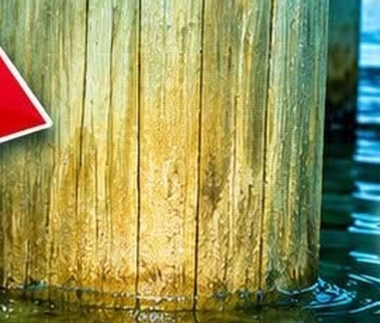

Zinc Anode Replacement in Tampa Bay
Zinc anodes are sacrificial metal that corrodes so your props, shafts, outdrives and trim tabs do not. Once the zincs are worn away, salt water starts eating the parts that cost real money. Sea Dog Marine replaces worn zincs in the water at your dock or slip.

What it is
A zinc anode is a small block of sacrificial metal bolted to a shaft, propeller, trim tab or outdrive. It is meant to corrode first, so the more expensive underwater metal is less likely to be eaten by galvanic corrosion. Replacement means a diver takes off the worn anode and installs a new one against a clean contact, while the boat stays in the water.
Why it matters in Tampa Bay saltwater
Salt water conducts the small electrical currents that drive galvanic corrosion. A boat that lives in Tampa Bay, whether it sits in a Pinellas harbor, a Hillsborough canal or a Manatee river slip, keeps metal in that water. The zinc gets smaller as it does its job. When it is mostly gone, shafts, props, trim tabs and outdrives are the parts that can start to pit. Changing the zinc at the dock is a small job compared with waiting on a haul out.
The process
- Text 727-699-4920 with the boat type and where it is kept. A photo of the transom or drive helps.
- A diver inspects the underwater zincs on the shaft, propeller, trim tabs and outdrive where they can be reached.
- Worn anodes are replaced. The contact surface is cleaned before the new zinc goes on, so it can actually protect the metal.
- You get a report of what was replaced. Anodes we cannot reach in the water are noted so you can plan a haul out for those.
What is included
- Inspection of all underwater zincs
- Replacement of worn shaft, prop and trim tab zincs
- Outdrive and engine leg anodes where reachable
- Clean contact surfaces before installing new zincs
- Report of what was replaced
Galvanic corrosion works quietly under the waterline. Fresh zincs are cheap compared with replacing a prop, shaft or outdrive that corroded because the anodes ran out.
Related services
- Hull and Boat Bottom Cleaning
- Propeller Cleaning
- All dive services
- Boat lift cleaning
- Service areas
- Free video inspection
Where we provide zinc anode replacement
- Zinc Anode Replacement in Pinellas County
St. Petersburg, Clearwater, Largo, Seminole, Dunedin - Zinc Anode Replacement in Hillsborough County
Tampa, Davis Islands, Harbour Island, Apollo Beach, Ruskin - Zinc Anode Replacement in Manatee County
Bradenton, Palmetto, Anna Maria Island, Holmes Beach, Bradenton Beach
City pages
- Zinc Anode Replacement in St. Petersburg
- Zinc Anode Replacement in Clearwater
- Zinc Anode Replacement in Tampa
- Zinc Anode Replacement in Largo
- Zinc Anode Replacement in Seminole
- Zinc Anode Replacement in Dunedin
- Zinc Anode Replacement in Tarpon Springs
- Zinc Anode Replacement in Treasure Island
- Zinc Anode Replacement in St. Pete Beach
- Zinc Anode Replacement in Madeira Beach
- Zinc Anode Replacement in Apollo Beach
- Zinc Anode Replacement in Bradenton
- Zinc Anode Replacement in Palmetto
- Zinc Anode Replacement in Anna Maria Island
- Zinc Anode Replacement in Longboat Key
Frequently Asked Questions
What do zinc anodes do on a boat?
Zinc anodes are sacrificial. They corrode first so the more valuable underwater metal, like props, shafts, trim tabs and outdrives, is protected from galvanic corrosion.
How do I know when my zincs need replacing?
Zincs wear down over time in salt water. We inspect them in the water and replace them when they are worn. Text a photo of your boat and we will set up a check.
Can zincs be replaced without hauling the boat?
Yes. Most shaft, prop and trim tab zincs can be replaced by a diver in the water at your dock or slip.
Can zinc replacement be done with a hull cleaning?
Yes. We check zincs during hull and boat bottom cleaning and can replace the worn ones on the same dive.
Free Video Inspection
Text a short video or a few photos of your dock, seawall, pilings or lift. We send back a recommendation and price, usually the same day.